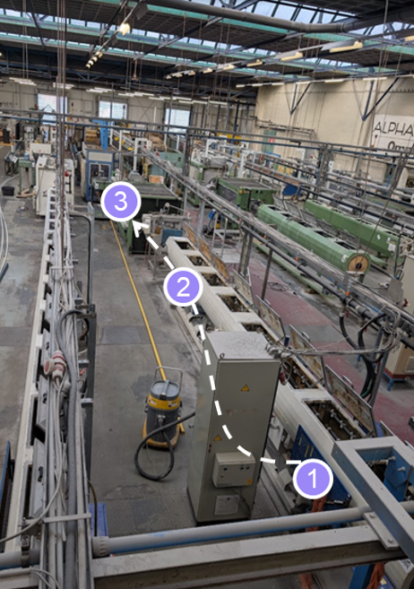
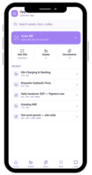
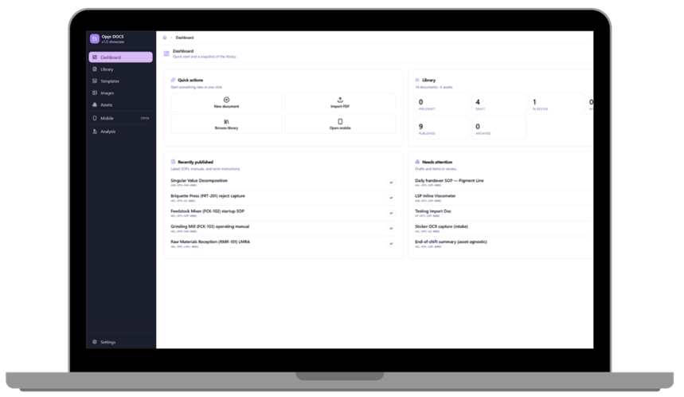
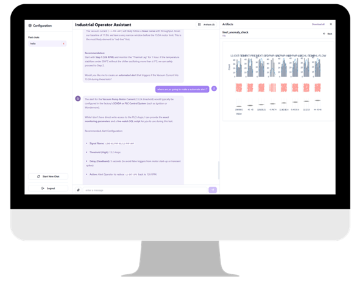
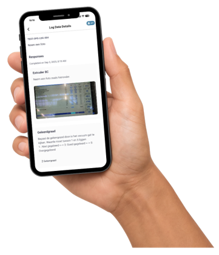
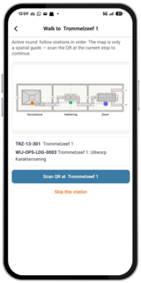
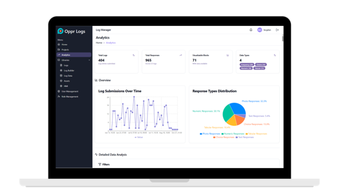
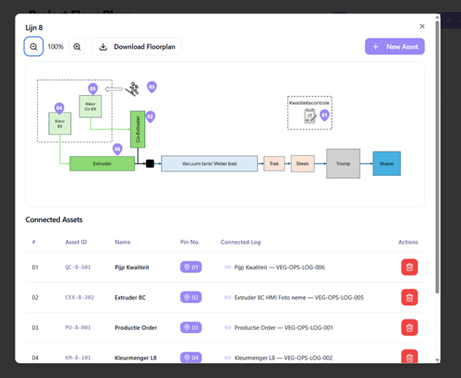

capture.jpg
Line-art diagram on warm paper: an operator logging what he sees in the moment it happens, beside the machine readout.
operators are the sensor · Capture step of Capture -> Connect -> Execute · catching signal at the source
public

connect-timeline.jpg
Line-art diagram on warm paper: operator context above one timeline, machine data below, the two meeting.
Connect step · one timeline for machine and operator signal · how the data finally comes together
public

execute-loop.jpg
Line-art diagram on warm paper: a finding returning to the floor as a standard action on the operator's phone.
Execute step · closing the loop on the floor · turning insight into standard practice
public

floor-round-overlay.png
A production hall photographed from above with an operator's round drawn on it as numbered stops.
cover for the approach carousel · the round they already walk, made visible
public

hero-plate.jpg
Operator on the plant floor capturing an observation on his phone.
operators are the sensor · augment don't replace · cover / opening emotional hook · the human context machines can't see
public

customers/attero.png
Attero customer / partner logo.
named reference — only in a deck cleared to show Attero
named-customer

customers/holliday.png
Holliday (Venator) customer logo.
named reference — Mutares-family decks only
mutares-family

customers/host.png
HOST customer / partner logo.
named reference — only in a deck cleared to show HOST
named-customer

customers/keeeper.webp
keeeper customer / partner logo.
named reference — only in a deck cleared to show keeeper
named-customer

customers/mutares.svg
Mutares logo (portfolio owner).
prepared-for mark in Mutares-family decks only
mutares-family

customers/omniplast.png
Omniplast customer / partner logo.
named reference — only in a deck cleared to show Omniplast
named-customer

customers/selo.svg
Selo customer / partner logo.
named reference — only in a deck cleared to show Selo
named-customer

customers/sonneborn.png
Sonneborn customer / partner logo.
named reference — only in a deck cleared to show Sonneborn
named-customer
gen/industry-chemical.jpg
Process pipework, flange and valve wheel: the chemical industry, material only.
industry band for a chemical case
public
gen/industry-plastics.jpg
Polymer pellets and a cooling extrudate strand: the plastics industry, material only.
industry band for a plastics case
public
gen/industry-recycling.jpg
Mixed municipal solid waste on a sorting belt with a trommel screen behind: the recycling industry, material only.
industry band for a municipal waste recycling case
public

product/app-home-operator.png
The operator app home: scan a code, ask the assistant, open the SOP for the asset in front of you.
Execute: the standard in the operator's hand · one place for the asset, the doc and the question
public

product/docs-desktop-library.png
The document library on the desktop: SOPs published, recently updated and needing attention.
Execute: the fix returning as standard practice · keeping standards current after a finding
public

product/docs-showcase.png
Executing according to SOPs built from the captured information.
Execute to SOP · what you learn becomes standard practice · the SOP / DOCS surface
public

product/ida-desktop-assistant-charts.png
The Industrial Operator Assistant answering a process question against the plant's own charts.
Connect: machine data and operator context answering one question · turning captured context into an answer
public

product/ida-desktop-assistant.png
The Industrial Operator Assistant answering a question about the process on the desktop.
ask the data a question · the assistant surface · analyze step, conversational
public

product/ida-laptop-production-metrics.png
Analyzing captured data alongside machine data.
Analyze the data · patterns and causes finally show · machine data and operator context together
public

product/ida-laptop-wall-thickness.png
Analyzing a specific quality parameter (wall thickness) against captured conditions.
root cause on a specific parameter · connecting a defect to its conditions · analyze step, concrete example
public

product/logs-app-capture.png
Capturing information from the field.
Capture in the field · twenty seconds in any language · the mobile capture moment
public

product/logs-app-entry-detail.png
A completed operator log entry on the phone, with the photo the operator took of the machine.
Capture: what operators see, when they see it · proof that capture takes seconds, in the hand
public

product/logs-app-review.png
Reviewing captured entries on the phone before they sync.
review what was captured · the operator confirms the record · closing the mobile logs flow
public

product/logs-app-round-guided.png
The operator's guided round on the phone: walk to the next station, scan the code, continue.
Capture inside the round they already walk · how little the system asks of an operator
public

product/logs-app-round.png
An operator taking a round in the field.
Take a round · guided station to station · the operator's daily flow
public

product/logs-app-schedule.png
The operator's schedule of rounds and checks for the shift, on the phone.
what the operator is guided to do · rounds and checks for the shift · start of the mobile logs flow
public

product/logs-desktop-analytics.png
Log analytics on the desktop: submissions over time and the distribution of what was captured.
showing captured signal becoming a pattern · volume of operator context over time
public

product/logs-desktop-builder.png
Building a log to capture the right information.
Build the logs · compose the exact checks, no code · configuring what gets captured
public

product/logs-desktop-floorplan-assets.png
A production line mapped as a flow, with each asset on it linked to the log that captures it.
showing a line modelled asset by asset · where capture points sit on a real line
public

product/logs-desktop-floorplan.png
Setting up data collection on a plant floorplan.
Set up data collection · pin log points to a floorplan · every capture has a place
public

product/platform-loop.png
The Capture, Connect, Execute loop: operator context above the timeline, machine data below.
explaining the three moves · how the product works end to end · connect human and machine signal
public